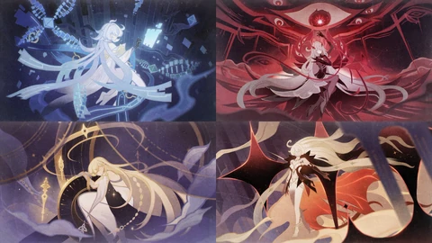

Teyvat & Unknown · Gods & Divinity
Four Shades
The Four Shades are ancient rulers associated with the Heavenly Principles. The game names several of them and gives them domains, while their full nature, history, and present status remain only partly known.

An ancient account, then later testimony
Before Sun and Moon, a chronicle preserved in Enkanomiya, says that the Primordial One created four Shades. The book is an in-world account from an Enkanomiyan author, so its claims should be read as a source with a point of view rather than an all-seeing narrator.
Later dialogue calls them the Four Great Rulers who serve the Heavenly Principles and govern Life, Death, Time, and Space. The game has connected these figures to its ancient history, but has not supplied one uninterrupted account of their creation, duties, and relationship to the Primordial One.
Names and domains
HoYoverse’s Teyvat Chapter Interlude Teaser names Ronova as the Ruler of Death, Naberius as the Ruler of Life, and Istaroth as the Ruler of Time. Later story material identifies Asmoday with the Ruler of Space. These titles give the four domains; they do not amount to complete biographies or a full account of what each ruler can do.
Older records give Istaroth a place in Enkanomiya and other regional histories. The additional names and titles arrive through much later quests and official story material, so the evidence should not be flattened into one ancient source.
The Shades appear in later quests
In Song of the Welkin Moon: Act X, Nahida meets three figures identified by their titles as the Rulers of Life, Death, and Time. They speak with her about the state of Irminsul. The scene confirms their direct presence in the story, but the surrounding dialogue should be followed before assigning them a single shared motive.
Natlan’s Archon Quest also establishes that the Shades prefer not to be named openly. That helps explain why many earlier records speak around them, but it does not mean every title or name used by the game is unknown to its characters.
The Esoptron and Asmoday’s absence
Version 7.2 introduces the Esoptron at the Temple of Space. Alice describes it as a query terminal built by the Heavenly Principles, and says each of the Four Shades has the right to use it. Its dialogue says that it can act for its master within certain parameters; the quest does not turn the terminal into a Shade or establish that it speaks with the Heavenly Principles’ own active voice.
Alice says the Temple belongs to Asmoday and that the Ruler of Space is missing, so the Hexenzirkel uses that site for its inquiry. The same story identifies Istaroth as the group’s supporter while describing limits she placed on their involvement. These are specific statements made in the current crisis, not a complete guide to either Shade’s motives.
Questions the game has not settled
The game now gives all four a name and domain, but important context remains incomplete: how their roles operate in practice, what happened to Asmoday, and how the Primordial One named in the Enkanomiyan chronicle relates to the Heavenly Principles in every period of history.
The roles are canon; the full cosmology and the motives attributed to individual Shades are not all equally explicit. This guide keeps the distinctions visible and avoids treating symbolic readings or community theories as quest dialogue.
This is an original CoreGG reading guide, not an official HoYoverse article or a reproduction of the game text. Source links below identify the records used so you can check the original context.
Sources & references
Check these sources for the original game text and reference trail.
- Genshin Impact Wiki · lore reference
- HoYoverse · Teyvat Chapter Interlude Teaser: The Gods’ Limits
- Genshin Impact Wiki · Before Sun and Moon
- Genshin Impact Wiki · Truth Amongst the Pages of Purana (quest transcript)
- Genshin Impact Wiki · The Rainbow Destined to Burn (quest transcript)
- Teyvatica · Hour of Ruin (Version 7.2 quest recap and transcript links)